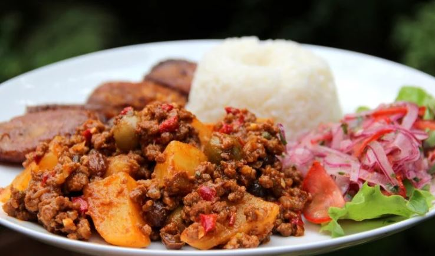

Cuban Beef Picadillo

Recipe for Cuban beef picadillo, a traditional dish made with ground beef, potatoes, onions, garlic, cumin, bell peppers, white wine, tomato sauce, raisins, olives and capers.
2 lbground beef2 tbspolive oil1 largeyellow onion, diced6garlic cloves, finely chopped1bell pepper, diced2 tbspground cumin3 mediumpotatoes, peeled and cut into small pieces2 cupsdry white wine1-2 cupswhole green olives stuffed w/ pimentos½ cupraisins¼ cupcapers, drained30 oz (2x15oz cans)tomato sauce1lemon- Salt and pepper to taste
Heat some water in a pot, add salt and the potatoes, let simmer for 10 minutes.
In a large skillet, brown the ground beef with a dash of cumin and pepper, drain off any excess grease and set aside.
Add 2 tbsp of olive oil over medium-low heat and cook the diced onion until soft, about 4-5 minutes.
Add the chopped garlic and cook until almost golden.
Mix in the bell pepper, cumin, 1 tsp freshly grounded pepper and a little salt – not too much as the olives and capers are salty.
Add the potato pieces and cook for about 5 minutes.
Add back the ground beef, add the wine, and let the liquid reduce.
Add raisins and the tomato sauce when the potatoes are about half-cooked (a knife can easily through the first part but the center is still very firm).
Cook for 10 more minutes and then add the olives and capers.
Continue cooking over medium heat, stirring occasionally, until the potatoes are ready. If the sauce thickens too much, you can add some more wine or a little bit of water. Add the lemon juice. Taste and adjust any seasonings: salt, pepper, cumin or additional olives/capers.
Serve with rice, fried ripe plantains and a salad.